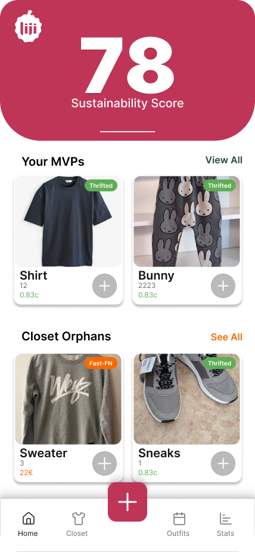
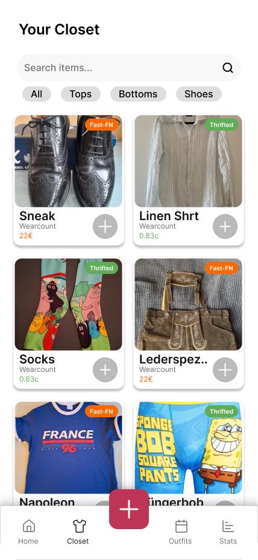
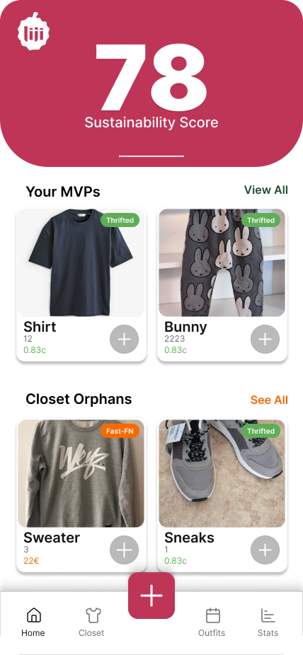
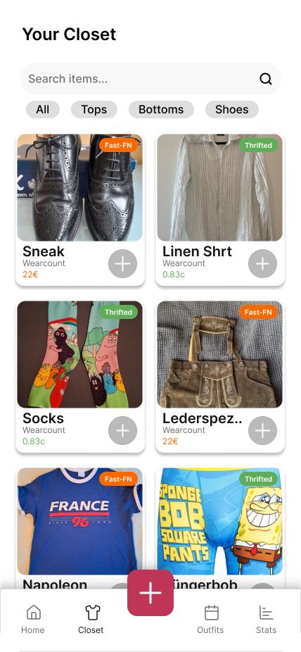

Liji
The virtual closet tracker that reveals the true cost of your wardrobe. Track usage, calculate Cost Per Wear, and boost your Sustainability Score.
Team
App Concept
The Use Case
Fast fashion has created a paradox: we own too much but wear too little. Liji solves "wardrobe inefficiency." By logging daily outfits, users visualize exactly which items are being neglected. The app calculates a real-time Sustainability Score and Cost Per Wear, incentivizing users to reduce textile waste.
Target User
Designed for the Conscious Fashionista and the Data-Driven Shopper. It is for university students and young professionals who want to know if their clothing investments were worth it and who wish to organize their cluttered closets digitally.

 





Prototype
Interact with the Liji user flow below.